library(googledrive) # for downloading google files
library(lubridate) # for dates
library(dplyr) # for mutate function
library(ggplot2) # for graphing
library(tidyverse) # for pivoting longerEvaluation of placement, efficiency, and animal behavioral response of non-invasive hair traps for wild North American beavers (Castor canadensis)
Loading Packages
Downloading Data
# DOWNLOADING DATA FROM GOOGLE DRIVE
# sometimes need this to authorize access to my google drive account
drive_deauth()
file.download <- function(ID){
file_id <- ID
temp_file <- tempfile(fileext = ".csv") # creating a temporary file with .csv
file <- drive_download(as_id(file_id), path = temp_file)
read.csv(temp_file)
}
# snare_check <- file.download()
# snare_database <- file.download()
# hair <- file.download()
# videos <- file.download()Converting Dates and Times to Usable Format
# SNARE DATABASE
snare_database$date.deployed <- as.Date(snare_database$date.deployed,format = "%m-%d-%Y")
snare_database$date.collected <- as.Date(snare_database$date.collected,format = "%m-%d-%Y")
snare_database$date.trail.camera.deployed <- as.Date(snare_database$date.trail.camera.deployed,format = "%m-%d-%Y")
snare_database$date.trail.camera.collected <- as.Date(snare_database$date.trail.camera.collected,format = "%m-%d-%Y")
# SNARE CHECK
snare_check$date.checked <- as.Date(snare_check$date.checked,format = "%m-%d-%Y")
# VIDEOS
# combining date and time column
videos$date.time.video.recorded <- paste(videos$date.video.recorded, videos$time.24.hour)
videos$date.time.video.recorded <- as.POSIXct(videos$date.time.video.recorded, format="%m-%d-%Y %H:%M:%S")
videos$date.video.recorded <- as.Date(videos$date.video.recorded, format = "%m-%d-%Y")
videos$date.sd.card.collected <- as.Date(videos$date.sd.card.collected, format = "%m-%d-%Y")
videos$time.24.hour <- as.POSIXct(videos$time.24.hour, format = "%H:%M:%S") # this converts the time but gives it an arbitrary date attached
# ordering data
videos <- videos[order(videos$hair.snare.id, videos$date.time.video.recorded), ]
# seperating duplicates by this function
funct <- function(data){
data %>%
group_by(hair.snare.id) %>%
mutate(
date.time.video.recorded = if_else(
duplicated(date.time.video.recorded) &
date.time.video.recorded == lag(date.time.video.recorded),
as.POSIXct(date.time.video.recorded) + seconds(1),
date.time.video.recorded
)
) %>%
ungroup()
}
# running the function four times to get rid of all duplicates
for (i in 1:4) {
videos <- funct(videos)
}
# checking that it worked
videos %>%
group_by(hair.snare.id, date.time.video.recorded) %>%
summarize(n=n()) %>% filter(n !=1)# A tibble: 0 × 3
# Groups: hair.snare.id [0]
# ℹ 3 variables: hair.snare.id <chr>, date.time.video.recorded <dttm>, n <int># HAIR
hair$date.collected.for.samples <- as.Date(hair$date.collected.for.samples, format = "%m-%d-%Y")
hair$date.collected <- hair$date.collected.for.samples
#hair$date.collected.for.samples <- as.POSIXct(hair$date.collected.for.samples, format="%m-%d-%Y")
# CREATING YEAR COLUMNS
# creating the column
snare_database$year <- year(snare_database$date.deployed)
snare_check$year <- year(snare_check$date.checked)
hair$year <- year(hair$date.collected.for.samples)
# summarizing number of snares deployed each year
snare_database %>% group_by(year) %>% summarize(n=n())# A tibble: 2 × 2
year n
<dbl> <int>
1 2022 33
2 2023 31snare_database %>% group_by(pond.id) %>% summarize(n=n())# A tibble: 56 × 2
pond.id n
<chr> <int>
1 pond_01 4
2 pond_02 1
3 pond_03 1
4 pond_04 1
5 pond_05 2
6 pond_06 1
7 pond_07 1
8 pond_08 2
9 pond_09 1
10 pond_10 1
# ℹ 46 more rowssnare_database %>% group_by(pond.id, year) %>% summarize(n=n())# A tibble: 61 × 3
# Groups: pond.id [56]
pond.id year n
<chr> <dbl> <int>
1 pond_01 2022 3
2 pond_01 2023 1
3 pond_02 2022 1
4 pond_03 2022 1
5 pond_04 2022 1
6 pond_05 2022 1
7 pond_05 2023 1
8 pond_06 2022 1
9 pond_07 2022 1
10 pond_08 2022 1
# ℹ 51 more rowsSummarizing Hair Snares
Days each snare was deployed
# removing spaces
snare_database$hair.snare.id <- gsub(" ", "", snare_database$hair.snare.id)
# creating a column for number of days each snare was deployed
snare_database$number.of.days.deployed <- as.numeric(difftime(snare_database$date.collected, snare_database$date.deployed, units = "days"))
# calculating first and last date snares were deployed for each year
snare_database %>%
subset(!(hair.snare.id == "snare_01" |
hair.snare.id == "snare_02" |
hair.snare.id =="snare_03" |
hair.snare.id =="snare_59")) %>%
group_by(year) %>% summarize(first_date = min(date.deployed), last_date = max(date.collected))# A tibble: 2 × 3
year first_date last_date
<dbl> <date> <date>
1 2022 2022-08-27 2022-11-02
2 2023 2023-08-22 2023-10-27# calculating average number of days snares deployed
# don't want to include pilot snares 1, 2, and 3 but 3_b is alright
snare_database %>%
subset(!(hair.snare.id == c("snare_01","snare_02","snare_03","snare_59"))) %>%
group_by(year) %>%
summarize(average.days.deployed = mean(number.of.days.deployed),
sd = sd(number.of.days.deployed))# A tibble: 2 × 3
year average.days.deployed sd
<dbl> <dbl> <dbl>
1 2022 59.6 12.9
2 2023 50.5 4.95How often snares were checked
# arranging data so that it's in order for each hair.snare.id and in chronological order
snare_check <- snare_check %>% arrange(hair.snare.id, date.checked)
# Calculate the number of days between each check for each trap
snare_check <- snare_check %>%
group_by(hair.snare.id) %>%
mutate(days.between.checks = c(0, diff(date.checked))) %>%
ungroup()
# figuring out average number of days between hair snare checks for each year
snare_check %>%
subset(!(hair.snare.id == c("snare_01","snare_02","snare_03","snare_59"))) %>%
group_by(year) %>% summarize(mean = mean(days.between.checks),
median = median(days.between.checks),
sd = sd(days.between.checks))# A tibble: 2 × 4
year mean median sd
<dbl> <dbl> <dbl> <dbl>
1 2022 14.3 8 16.0
2 2023 7.77 7 7.38Beaver features snares were deployed on
snare_database %>% group_by(beaver.feature) %>% summarize(n=n())# A tibble: 5 × 2
beaver.feature n
<chr> <int>
1 below.lodge 2
2 dam 7
3 dam.crossing 16
4 feeding.area 1
5 feeding.trail 38Summarizing Cameras
Days cameras were deployed at each snare
# creating a column for number of days each trail camera was deployed
snare_database$number.of.days.camera.deployed <- as.numeric(difftime(snare_database$date.trail.camera.collected, snare_database$date.trail.camera.deployed, units = "days"))
# editing snares that had cameras deployed twice (snare_44 and snare_43)
snare_database$number.of.days.camera.deployed <- ifelse(snare_database$snare == "snare_43",50,snare_database$number.of.days.camera.deployed)
snare_database$number.of.days.camera.deployed <- ifelse(snare_database$snare == "snare_44",29,snare_database$number.of.days.camera.deployed)
# converting column to numeric
snare_database$number.of.days.camera.deployed <- as.numeric(snare_database$number.of.days.camera.deployed)
# creating column for if snare had camera or not
snare_database$camera <- ifelse(is.na(snare_database$number.of.days.camera.deployed), 0, 1)
# summarising number of snares that had cameras each year
snare_database %>%
subset(hair.snare.id != c("snare_01","snare_02","snare_03","snare_59")) %>%
group_by(camera, year) %>% summarize(n=n())# A tibble: 4 × 3
# Groups: camera [2]
camera year n
<dbl> <dbl> <int>
1 0 2022 5
2 0 2023 5
3 1 2022 27
4 1 2023 25# percent of time camera covered snare: number of days camera deployed / number of days snare deployed
snare_database$days.camera.per.days.snare.deployed <- snare_database$number.of.days.camera.deployed/snare_database$number.of.days.deployed
# calculating average percent of days cameras were on each snare out of the number of days each snare was deployed
snare_database %>%
subset(hair.snare.id != c("snare_01","snare_02","snare_03","snare_59")) %>%
group_by(year) %>%
summarize(average.percent.camera.days.deployed =
mean(days.camera.per.days.snare.deployed, na.rm = TRUE),
sd = sd(days.camera.per.days.snare.deployed, na.rm = TRUE))# A tibble: 2 × 3
year average.percent.camera.days.deployed sd
<dbl> <dbl> <dbl>
1 2022 0.909 0.233
2 2023 0.858 0.276Remote Camera Videos
Videos captured per snare per day
# calculating total number of videos recorded per snare
n.videos <- videos %>% group_by(hair.snare.id) %>% summarize(n_videos = n())
colnames(n.videos) <- c("hair.snare.id","n_videos")
# adding column to snare_database
snare_database <- merge(snare_database, n.videos, by = "hair.snare.id", all=TRUE)
# average number of videos caught per snare out of the total days cameras were deployed
snare_database$videos.taken.per.day <- snare_database$n_videos/snare_database$number.of.days.camera.deployedSpecies captured in videos
# removing spaces from species column
videos$main.species <- gsub(" ", "", videos$main.species)
# figuring out species captured in videos
n.species.videos <- videos %>% group_by(main.species) %>% summarize(n=n())
sum(n.species.videos$n) [1] 9186# total videos in them with beavers as the main species
subset(videos, videos$main.species == "beaver") %>% summarize(n=n())# A tibble: 1 × 1
n
<int>
1 5627# total videos in them with beavers as the secondary species
subset(videos, videos$secondary.species == "beaver") %>% summarize(n=n())# A tibble: 1 × 1
n
<int>
1 19# number of videos of beavers per snare
n.videos.beavers <- subset(videos, videos$main.species == "beaver" |
videos$secondary.species == "beaver") %>% group_by(hair.snare.id) %>% summarize(n.videos.beavers = n())
# adding column to snare_databasae
colnames(n.videos.beavers) <- c("hair.snare.id", "n.videos.beavers")
snare_database <- merge(snare_database, n.videos.beavers, by = "hair.snare.id", all = TRUE)
# calculating number of videos of beavers taken per all videos taken for each snare
snare_database$n.videos.beavers.per.video <- snare_database$n.videos.beavers/snare_database$n_videos
snare_database %>%
subset(hair.snare.id != c("snare_01","snare_02","snare_03","snare_59")) %>%
group_by(year) %>%
summarize(mean = mean(n.videos.beavers.per.video, na.rm=TRUE), sd = sd(n.videos.beavers.per.video, na.rm=TRUE))# A tibble: 2 × 3
year mean sd
<dbl> <dbl> <dbl>
1 2022 0.596 0.247
2 2023 0.484 0.281Times all species snagged snare
# replacing unk with NAs
videos$snag.snare <- ifelse(videos$snag.snare == "unk", NA, videos$snag.snare)
# total number of times snare was snagged
total.snags <- subset(videos, videos$snag.snare == 1) %>% group_by(hair.snare.id) %>% summarize(total.snags=n())
# adding to snare_database
colnames(total.snags) <- c("hair.snare.id","total.snags")
snare_database <- merge(snare_database, total.snags, by= "hair.snare.id", all=TRUE)
# number of snags per number of days camera deployed
snare_database$snags.per.camera.days <- snare_database$total.snags / snare_database$number.of.days.camera.deployed
# finding average number of snags per number of days camera deployed
mean(snare_database$snags.per.camera.days, na.rm=TRUE)[1] 1.98275sd(snare_database$snags.per.camera.days, na.rm=TRUE)[1] 4.098441Times beavers snagged snare
# figuring out number of times beaver snagged snare
subset(videos, videos$main.species == "beaver") %>%
group_by(snag.snare) %>%
summarize(n=n())# A tibble: 3 × 2
snag.snare n
<chr> <int>
1 0 2563
2 1 3061
3 na 3# number of times beavers snagged each snare
beaver_snag <- subset(videos, videos$main.species == "beaver" &
videos$snag.snare == 1) %>% group_by(hair.snare.id) %>% summarize(beaver_snag = n())
# adding to snare_database
colnames(beaver_snag) <- c("hair.snare.id","n.beaver.snag")
snare_database <- merge(snare_database, beaver_snag, by = "hair.snare.id", all = TRUE)
# finding percent beavers snagged snare
snare_database$percent.beaver.snag <- (snare_database$n.beaver.snag) / (snare_database$total.snags)
mean(snare_database$percent.beaver.snag, na.rm = TRUE)[1] 0.8318469sd(snare_database$percent.beaver.snag, na.rm = TRUE)[1] 0.2023704Times other animals snagged snare
Muskrat
# MUSKRATS
# number of times beavers snagged each snare
muskrat_snag <- subset(videos, videos$main.species == "muskrat" &
videos$snag.snare == 1) %>% group_by(hair.snare.id) %>% summarize(muskrat_snag = n())
# adding to snare_database
colnames(muskrat_snag) <- c("hair.snare.id","n.muskrat.snag")
snare_database <- merge(snare_database, muskrat_snag, by = "hair.snare.id", all = TRUE)
# finding percent muskrat snagged snare
snare_database$percent.muskrat.snag <- round(snare_database$n.muskrat.snag / snare_database$total.snags,2)
mean(snare_database$percent.muskrat.snag, na.rm = TRUE)[1] 0.1635714sd(snare_database$percent.muskrat.snag, na.rm = TRUE)[1] 0.2741029Otter
# OTTER
# number of times beavers snagged each snare
otter_snag <- subset(videos, videos$main.species == "otter" &
videos$snag.snare == 1) %>% group_by(hair.snare.id) %>% summarize(otter_snag = n())
# adding to snare_database
snare_database <- merge(snare_database, otter_snag, by = "hair.snare.id", all = TRUE)
# finding percent otters snagged snare
snare_database$percent.otter.snag <- round(snare_database$otter_snag / snare_database$total.snags,2)
mean(snare_database$percent.otter.snag, na.rm = TRUE)[1] 0.04sd(snare_database$percent.otter.snag, na.rm = TRUE)[1] 0.0277746Fisher
# FISHER
# number of times beavers snagged each snare
fisher_snag <- subset(videos, videos$main.species == "fisher" &
videos$snag.snare == 1) %>% group_by(hair.snare.id) %>% summarize(fisher_snag = n())
# adding to snare_database
snare_database <- merge(snare_database, fisher_snag, by = "hair.snare.id", all = TRUE)
# finding percent beavers snagged snare
snare_database$percent.fisher.snag <- round(snare_database$fisher_snag / snare_database$total.snags,2)
mean(snare_database$percent.fisher.snag, na.rm = TRUE)[1] 0.2616667sd(snare_database$percent.fisher.snag, na.rm = TRUE)[1] 0.3691838All Weasels (labeled as pine marten in code)
# PINE MARTEN THIS WILL BE ACTUALLY FOR ALL WEASELS
# number of times beavers snagged each snare
pinemarten_snag <- subset(videos, videos$main.species == "pinemarten" |
videos$main.species == "unkweasel" |
videos$main.species == "ermine" |
videos$main.species == "unkmustelid" |
videos$main.species == "longtailedweasel" |
videos$main.species == "shorttailedweasel" &
videos$snag.snare == 1) %>% group_by(hair.snare.id) %>% summarize(pinemarten_snag = n())
# adding to snare_database
colnames(pinemarten_snag) <- c("hair.snare.id","n.pinemarten.snag")
snare_database <- merge(snare_database, pinemarten_snag, by = "hair.snare.id", all = TRUE)
# finding percent all weasels snagged snare
snare_database$percent.pinemarten.snag <- round(snare_database$n.pinemarten.snag / snare_database$total.snags,2)
mean(snare_database$percent.pinemarten.snag, na.rm = TRUE)[1] 0.4326087sd(snare_database$percent.pinemarten.snag, na.rm = TRUE)[1] 0.7883828Graphing number of times animals captured snagging snares in videos
# getting rid of spaces in main species column
videos$main.species <- gsub(" ", "", videos$main.species)
# creating column indicating if similar species to beaver were recorded in videos
videos <- videos %>%
mutate(similar.species =
ifelse(main.species == "beaver"|
main.species == "fisher"|
main.species == "muskrat"|
main.species == "otter"|
main.species == "pinemarten"|
main.species == "unkweasel"|
main.species == "ermine"|
main.species == "unkmustelid"|
main.species == "longtailedweasel"|
main.species == "americanmink"|
main.species == "shorttailedweasel",main.species,"Other Species"
))
# collapsing all weasel species into "weasels"
videos$similar.species = ifelse((videos$similar.species == "pinemarten"|
videos$similar.species =="unkweasel"|
videos$similar.species =="ermine"|
videos$similar.species =="unkmustelid"|
videos$similar.species =="longtailedweasel"|
videos$similar.species =="shorttailedweasel"),
"weasels", videos$similar.species)
# renaming species so they look nicer in graph
videos$similar.species[videos$similar.species == "beaver"] <- "Beaver"
videos$similar.species[videos$similar.species == "americanmink"] <- "Mink"
videos$similar.species[videos$similar.species == "fisher"] <- "Fisher"
videos$similar.species[videos$similar.species == "muskrat"] <- "Muskrat"
videos$similar.species[videos$similar.species == "otter"] <- "Otter"
videos$similar.species[videos$similar.species == "mink"] <- "Mink"
videos$similar.species[videos$similar.species == "weasels"] <- "Other Weasels"
# getting rid of snare_ before snare ID so that it looks better in the graph
videos$snare_number <- sub("^snare_", "", videos$hair.snare.id)
# replacing snare 03_b with snare 58 to make labels easier to read
videos$snare_number <- ifelse(videos$snare_number == "03_b", "60",videos$snare_number)
# converting snare_number to a factor so it isn't read as an integer by ggplot
videos$snare_number<- as.factor(videos$snare_number)
# graphing counts
subset(videos, videos$snag.snare == 1) %>% ggplot(aes(x=snare_number, fill = similar.species)) + geom_bar() +
xlab("Snare ID") + # Change X-axis title
ylab("Percent of instances animals snagged snare") +
labs(fill = "Species") 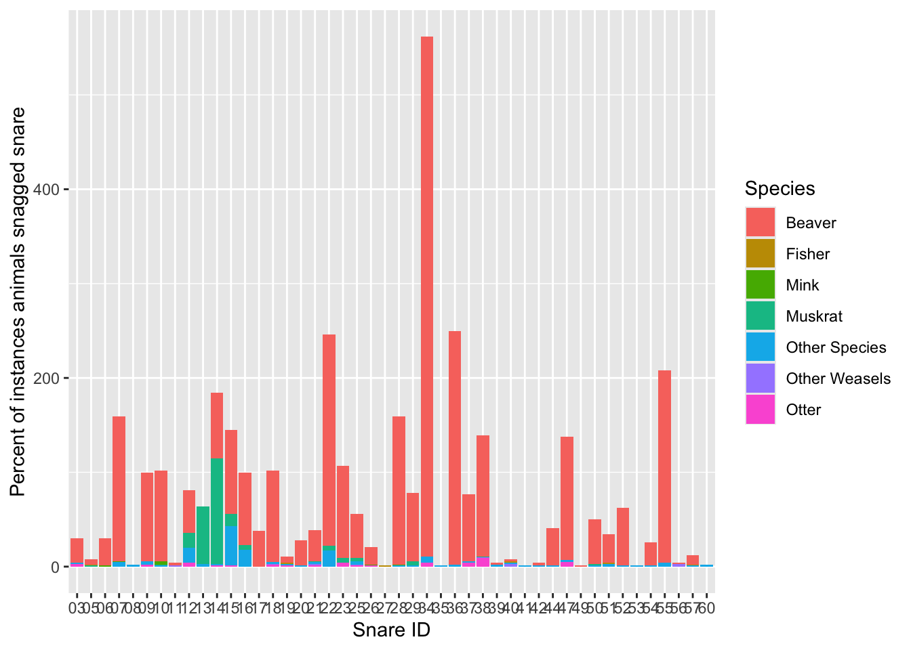
# graphing percentages
subset(videos, videos$snag.snare == 1) %>%
ggplot(aes(x=snare_number, fill = similar.species)) +
geom_bar(position="fill") +
xlab("Snare ID") + # Change X-axis title
ylab("Percent of instances animals snagged snare") +
labs(fill = "Species") +
theme_classic() +
scale_y_continuous(expand = c(0, 0)) +
theme(axis.text.x = element_text(size = 12), # Adjust x-axis text size
axis.text.y = element_text(size = 12), # Adjust y-axis text size
axis.title.x = element_text(size = 14), # Adjust x-axis label size
axis.title.y = element_text(size = 14))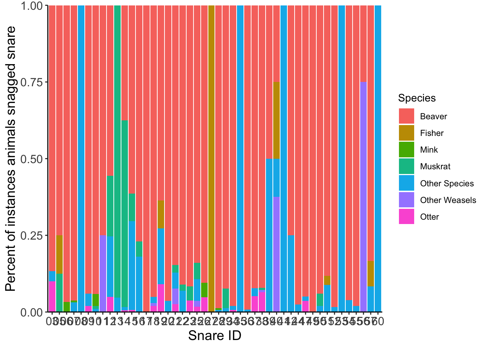
Times beavers went over, under, side of snare
# getting rid of spaces in data
videos$over.under.side.of.snare<- gsub(" ", "", videos$over.under.side.of.snare)
# summing over side and under
side.of.snare <- subset(videos, videos$main.species == "beaver" & over.under.side.of.snare != "na") %>% group_by(over.under.side.of.snare) %>% summarise(n=n())
# seperating side of body column into seperate columns
side.of.snare <- separate(side.of.snare, over.under.side.of.snare, into = paste("body", 1:3, sep="_"), sep = "\\.")
# figuring out total times beaver touched over, under, or side of snare. If beaver did more than one that was counted twice (once for side and once for over for example)
side.of.snare.sum <- side.of.snare %>%
pivot_longer(cols = c(body_1, body_2, body_3), names_to = "body_part", values_to = "side.of.snare") %>% group_by(side.of.snare) %>%
summarize(total_samples = sum(n, na.rm = TRUE))
# finding percent not including NAs
side.of.snare.sum$percent <- round(side.of.snare.sum$total_samples / (sum(side.of.snare.sum$total_samples[1:4])),2)Times each body part was snagged
# figuring out number of times each part of a beavers body was snagged
# converting columns to numeric
videos$snout.sampled <- as.numeric(videos$snout.sampled)
videos$head.sampled <- as.numeric(videos$head.sampled)
videos$neck.sampled <- as.numeric(videos$neck.sampled)
videos$back.sampled <- as.numeric(videos$back.sampled)
videos$side.sampled <- as.numeric(videos$side.sampled)
videos$belly.sampled <- as.numeric(videos$belly.sampled)
videos$legs.sampled <- as.numeric(videos$legs.sampled)
videos$rump.sampled <- as.numeric(videos$rump.sampled)
videos$tail.sampled <- as.numeric(videos$tail.sampled)
# subsetting data
videos.beaver <- subset(videos, videos$main.species == "beaver")
# summing number of times each body part was snagged for beavers
beaver.body.snag <- videos.beaver %>% group_by(hair.snare.id) %>%
summarise(snout = sum(snout.sampled),
head = sum(head.sampled),
neck = sum(neck.sampled),
back = sum(back.sampled),
side = sum(side.sampled),
belly = sum(belly.sampled),
legs = sum(legs.sampled),
rump = sum(rump.sampled),
tail = sum(tail.sampled))
# pivoting longer
beaver.body.snag <- pivot_longer(beaver.body.snag,
cols = -hair.snare.id,
names_to = "body.part",
values_to = "n.snagged")
# grouping by body part
beaver.body.snag$n.snagged <- as.numeric(beaver.body.snag$n.snagged)
beaver.body.snag.sum <- beaver.body.snag %>% group_by(body.part) %>% summarize(sum=sum(n.snagged, na.rm = TRUE))
# attaching percent
beaver.body.snag.sum$percent <- round(beaver.body.snag.sum$sum / (sum(beaver.body.snag.sum$sum)), 2)Times beavers investigated snare or got snagged on snare
# total number of videos that recorded beavers
beaver <- subset(videos, videos$main.species == "beaver") %>% summarize(n=n())
# total number of videos that recroded beavers investigating snare
investigating <- videos %>% subset(main.species == "beaver") %>% subset(
main.behavior == "investigatingsnare" |
main.behavior == "investigatingcamera" |
main.behavior == "investigatingsnare.and.traveling") %>% summarize(n=n())
subset(videos, videos$main.species == "beaver" &
videos$main.behavior == "investigatingsnare") %>% summarize(n=n())# A tibble: 1 × 1
n
<int>
1 267# total number of videos that recorded beavers being influence by snare
influence <- subset(videos, videos$main.species == "beaver" &
videos$beaver.travel.inhibited.by.snare == 1) %>% summarize(n=n())
# percent of all videos recorded of beavers where beavers were investigating snare
investigating$n/beaver$n[1] 0.04833837# percent of all videos recorded of beavers where beavers were influenced by snare
influence$n/beaver$n[1] 0.001066288Times other animals snagged snare
# finding overall number of other species that snagges snare
subset(videos, videos$main.species != "beaver" & videos$snag.snare == 1) %>%
group_by(main.species) %>% summarize(n=n()) %>%
mutate(percent.snag = n / sum(n))# A tibble: 28 × 3
main.species n percent.snag
<chr> <int> <dbl>
1 americanmink 8 0.0174
2 blackbear 13 0.0283
3 bluejay 5 0.0109
4 bobcat 2 0.00436
5 broadwingedhawk 1 0.00218
6 canadajay 2 0.00436
7 fisher 7 0.0153
8 flyingsquirrel 1 0.00218
9 longtailedweasel 3 0.00654
10 moose 1 0.00218
# ℹ 18 more rowsHair
Hair weight collected
# making column numeric
hair$entire.sample.weight.mg <- as.numeric(hair$entire.sample.weight.mg)
# figuring out number of samples collected
n.samples<-subset(hair, hair$sample.type == "snare") %>% group_by(hair.snare.id) %>% summarize(n.samples=n())
# summarising total samples collected
sum(n.samples$n.samples)[1] 179# adding number of samples collected to snare_database
snare_database <- merge(snare_database, n.samples, by="hair.snare.id", all = TRUE)
# figuring out number of samples collected per number of days each snare was deployed
snare_database$sample.collection.rate <- snare_database$n.samples / snare_database$number.of.days.deployed
# figuring out weight of samples collected per snare (more informative than number)
hair.weight <- subset(hair, hair$sample.type == "snare" & !is.na(entire.sample.weight.mg)) %>%
group_by(hair.snare.id) %>%
summarize(weight.of.all.samples.collected.mg = sum(entire.sample.weight.mg))
# adding weight to the snare_database
snare_database <- merge(snare_database, hair.weight, by="hair.snare.id", all=TRUE)
# max and min of individual samples
subset(hair, hair$sample.type == "snare" & !is.na(entire.sample.weight.mg)) %>%
summarize(min = min(entire.sample.weight.mg), max=max(entire.sample.weight.mg)) min max
1 0 1540# figuring out weight of samples collected per number of days snare deployed
snare_database$hair.weight.per.day <- round(snare_database$weight.of.all.samples.collected.mg/snare_database$number.of.days.deployed,2)
# summarizing weight of sample collected per number of days snare deployed
snare_database %>% summarize(mean = mean(hair.weight.per.day, na.rm=T),
sd=sd(hair.weight.per.day, na.rm=T),
min = min(hair.weight.per.day, na.rm=T),
max = max(hair.weight.per.day, na.rm=T)) mean sd min max
1 2.748644 5.387187 0 36.48# turning entire sample weight into numeric just in case
hair$entire.sample.weight.mg <- as.numeric(hair$entire.sample.weight.mg)
# seeing if there is a trend between dirtiness of hair and weight
subset(hair, hair$sample.type == "snare") %>% ggplot(aes(x=dirt.score, y=entire.sample.weight.mg)) + geom_point()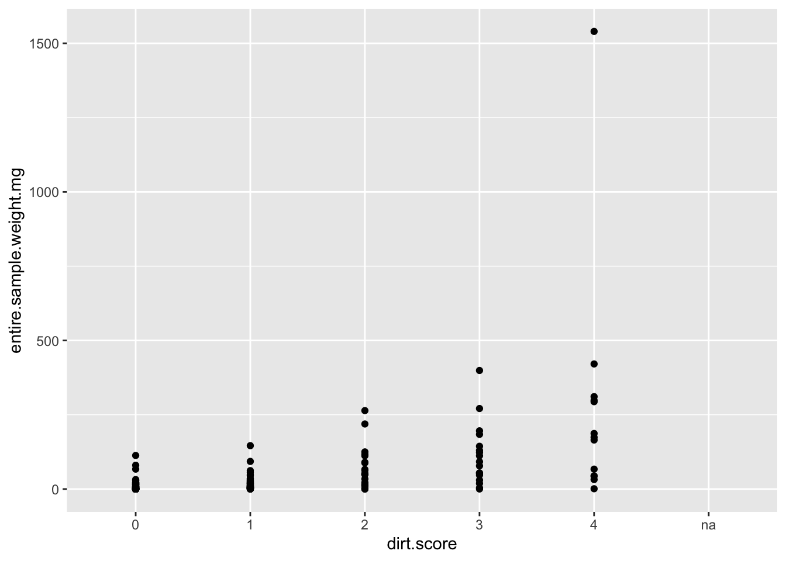
# grouping data by dirt score
subset(hair, hair$sample.type == "snare") %>% group_by(dirt.score) %>% summarize(n=n())# A tibble: 6 × 2
dirt.score n
<chr> <int>
1 0 75
2 1 49
3 2 24
4 3 17
5 4 13
6 na 1Dirtiness of hair
# finding average dirt score
hair$dirt.score <- as.numeric(hair$dirt.score)
subset(hair, hair$sample.type == "snare" & !is.na(dirt.score)) %>%
summarise(mean = mean(dirt.score)) mean
1 1.123596# figuring out average dirtiness per hair snare
mean.dirtiness <- subset(hair, hair$sample.type == "snare") %>%
group_by(hair.snare.id) %>%
summarize(mean.dirtiness = round(mean(dirt.score, na.rm = TRUE),2))
# adding mean dirtiness to snare_database
snare_database <- merge(snare_database, mean.dirtiness, by = "hair.snare.id", all=TRUE)
# figuring out percentage of each dirt score in hair samples
dirt.score <- subset(hair, hair$sample.type == "snare") %>%
group_by(dirt.score) %>% summarize(n=n())
dirt.score$percent <- round((dirt.score$n)/(sum(dirt.score$n)-2)*100,2)
# linear model for dirt scores to see if sample weight is influenced by dirt score
mod1 <- lm(entire.sample.weight.mg ~ dirt.score,
data = subset(hair, hair$sample.type == "snare"))
summary(mod1)
Call:
lm(formula = entire.sample.weight.mg ~ dirt.score, data = subset(hair,
hair$sample.type == "snare"))
Residuals:
Min 1Q Median 3Q Max
-194.68 -37.32 8.81 14.81 1344.32
Coefficients:
Estimate Std. Error t value Pr(>|t|)
(Intercept) -8.806 11.840 -0.744 0.458
dirt.score 51.122 7.023 7.280 1.07e-11 ***
---
Signif. codes: 0 '***' 0.001 '**' 0.01 '*' 0.05 '.' 0.1 ' ' 1
Residual standard error: 117.8 on 176 degrees of freedom
(1 observation deleted due to missingness)
Multiple R-squared: 0.2314, Adjusted R-squared: 0.227
F-statistic: 52.99 on 1 and 176 DF, p-value: 1.07e-11# figuring out if there are snares with no dirty samples
hair.snare.zero <- hair %>% group_by(hair.snare.id) %>% summarize(mean.dirt = mean(dirt.score)) %>% mutate(no.dirt = ifelse(mean.dirt == 0, "yes", "no")) %>% filter(no.dirt == "yes")
hair.snare.zero.id <- hair.snare.zero$hair.snare.id
snare_database[snare_database$hair.snare.id %in% hair.snare.zero.id,] hair.snare.id personnel pond.id VWP.pond.id VWP.lodge.id date.deployed
13 snare_10_b DRF pond_08 6235 5000 2023-08-23
18 snare_14_b DRF pond_12 1976 5000 2023-08-23
31 snare_26 DRF pond_24 2023 2406 2022-09-03
37 snare_32 DRF pond_30 1863 4422 2022-09-04
42 snare_37 DRF pond_35 NA 2300 2023-09-06
48 snare_43 SDP pond_41 NA na 2023-09-06
50 snare_45 SDP pond_43 NA 3739 2023-09-06
54 snare_49 SDP pond_47 NA 3721 2023-09-07
57 snare_52 ORJ pond_50 NA 3728 2023-09-07
58 snare_53 ORJ pond_51 NA 3730 2023-09-07
61 snare_56 SDP pond_54 NA 3724 2023-09-08
active date.collected number.of.days.deployed northing easting
13 no 2023-10-24 62 516786 5345735
18 no 2023-10-24 62 516786 5345729
31 no 2022-11-02 60 515131 5349315
37 no 2022-10-28 54 514820 5353626
42 no 2023-10-27 51 503232 5360543
48 no 2023-10-27 51 498744 5358802
50 no 2023-10-18 42 499127 5357671
54 no 2023-10-25 48 497413 5355641
57 no 2023-10-25 48 499963 5356065
58 no 2023-10-25 48 501135 5356151
61 no 2023-10-25 47 498132 5356425
length.of.barbed.wire trail.camera date.trail.camera.deployed
13 5m no <NA>
18 5m no <NA>
31 5m no 2022-09-03
37 5m no <NA>
42 5m yes 2023-09-06
48 5m yes 2023-09-06
50 5m yes 2023-09-06
54 5m yes 2023-09-07
57 4.6m yes 2023-09-07
58 4.3m yes 2023-09-07
61 5m yes 2023-09-08
date.trail.camera.collected trail.camera.type
13 <NA> na
18 <NA> na
31 2022-11-02 na
37 <NA> na
42 2023-10-27 recon.force.hp5.elite
48 2023-10-27 recon.force.hp5.elite
50 2023-09-17 recon.force.hp5.elite
54 2023-10-25 recon.force.hp5.elite
57 2023-10-25 recon.force.hp5.elite
58 2023-10-25 recon.force.hp5.elite
61 2023-10-25 recon.force.hp5.elite
sd.card.id beaver.feature trap.tag beaver.type
13 na feeding.trail yes pond
18 na feeding.area yes pond
31 na dam.crossing yes pond
37 na feeding.trail yes pond
42 12OFFAL feeding.trail yes pond
48 has SD, but will note when collected feeding.trail yes pond
50 32 GB, 3 offal feeding.trail yes pond
54 3OFFAL feeding.trail yes pond
57 15OFFAL feeding.trail yes pond
58 SD54 feeding.trail yes pond
61 BUMP04 feeding.trail yes pond
pack.territory photo.downloaded snare.devices brushes
13 clearcut deployed four.barbed.wire 0
18 clearcut deployed four.barbed.wire 0
31 bluebird yes four.barbed.wire, gun.brushes 1
37 bluebird yes four.barbed.wire, gun.brushes 1
42 halfmoon deployed four.barbed.wire 0
48 halfmoon deployed four.barbed.wire 0
50 halfmoon deployed four.barbed.wire 0
54 halfmoon deployed four.barbed.wire 0
57 halfmoon deployed four.barbed.wire 0
58 halfmoon deployed four.barbed.wire 0
61 halfmoon deployed four.barbed.wire 0
general.description
13 snare set over active feeding trail
18 snare set in active feeding area
31 snare set over dam crossing that leads to smaller pools and canals.
37 snare set across active feeding trails on northern edge of pond
42 snare set across feeding trail at the southern end of the most western pond. This area could also end up being a feeding area.
48 snare set across two feeding trails (camera deployed twice), trail camera deployed twice
50 snare set in front of canal and across trail, moved snare across two feeding trails on edge of canal
54 snare set across 2 feeding trails
57 snare set over a feeding trail coming out of a freshly excavated canal and a seemingly less active feeding trail
58 snare set over a feeding trail with lots of scent marking piles
61 snare set across one feeding trail along the edge of the pond
comments
13 Moved snare to southeast side of the pond across a muddy vegetation trail with prints and wood cuttings next to a dam.
18 Snare is set in what appears to be a feeding area. There isn't very many clear cuts, but beavers are around. There was a beaver in the pond. Right near 2 canals.
31 Fresh herbaceous cuttings were found along the dam.
37 Super active pond with a lot of fresh cuttings and a lot of excavating
42 Lots of activity at the smaller more western pond
48 snare set across two feeding trails near canal with wood cuttings and fresh mud prints. Camera was collected for two days at this snare and then redeployed (camera deployed twice)
50 camera collected and then redeployed
54 Saw a beaver swimming!
57 This feeding trail is awesome! The canal is very freshly excavated so I'm really hoping that they don't dig it out anymore. There was a beaver swimming in the pond :)
58 A beaver swam up the canal until it saw me and turned aound. There were also two swams. I love this pond.
61 very dried up canals in several areas, not entirely sure if it's still active
year number.of.days.camera.deployed camera
13 2023 NA 0
18 2023 NA 0
31 2022 60 1
37 2022 NA 0
42 2023 51 1
48 2023 51 1
50 2023 11 1
54 2023 48 1
57 2023 48 1
58 2023 48 1
61 2023 47 1
days.camera.per.days.snare.deployed n_videos videos.taken.per.day
13 NA NA NA
18 NA NA NA
31 1.0000000 84 1.4000000
37 NA NA NA
42 1.0000000 130 2.5490196
48 1.0000000 64 1.2549020
50 0.2619048 NA NA
54 1.0000000 12 0.2500000
57 1.0000000 181 3.7708333
58 1.0000000 32 0.6666667
61 1.0000000 106 2.2553191
n.videos.beavers n.videos.beavers.per.video total.snags
13 NA NA NA
18 NA NA NA
31 50 0.5952381 21
37 NA NA NA
42 89 0.6846154 77
48 3 0.0468750 NA
50 NA NA NA
54 2 0.1666667 1
57 87 0.4806630 62
58 NA NA 1
61 47 0.4433962 4
snags.per.camera.days n.beaver.snag percent.beaver.snag n.muskrat.snag
13 NA NA NA NA
18 NA NA NA NA
31 0.35000000 19 0.9047619 NA
37 NA NA NA NA
42 1.50980392 71 0.9220779 NA
48 NA NA NA NA
50 NA NA NA NA
54 0.02083333 1 1.0000000 NA
57 1.29166667 61 0.9838710 NA
58 0.02083333 NA NA NA
61 0.08510638 1 0.2500000 NA
percent.muskrat.snag otter_snag percent.otter.snag fisher_snag
13 NA NA NA NA
18 NA NA NA NA
31 NA 1 0.05 NA
37 NA NA NA NA
42 NA 4 0.05 NA
48 NA NA NA NA
50 NA NA NA NA
54 NA NA NA NA
57 NA NA NA NA
58 NA NA NA NA
61 NA NA NA NA
percent.fisher.snag n.pinemarten.snag percent.pinemarten.snag n.samples
13 NA NA NA 1
18 NA NA NA 1
31 NA NA NA 3
37 NA NA NA 1
42 NA 1 0.01 4
48 NA NA NA 4
50 NA NA NA 3
54 NA NA NA 3
57 NA 7 0.11 4
58 NA 3 3.00 3
61 NA 6 1.50 4
sample.collection.rate weight.of.all.samples.collected.mg
13 0.01612903 1
18 0.01612903 0
31 0.05000000 39
37 0.01851852 16
42 0.07843137 13
48 0.07843137 113
50 0.07142857 0
54 0.06250000 0
57 0.08333333 163
58 0.06250000 5
61 0.08510638 37
hair.weight.per.day mean.dirtiness
13 0.02 0
18 0.00 0
31 0.65 0
37 0.30 0
42 0.25 0
48 2.22 0
50 0.00 0
54 0.00 0
57 3.40 0
58 0.10 0
61 0.79 0# creating dataset for hair samples with a score of 0 for dirtiness
hair.zero <- hair %>% filter(sample.type == "snare" & dirt.score == 0)
# max weight of individual samples with a dirt score of 0
max(hair.zero$entire.sample.weight.mg)[1] 113# figuring out weight of samples collected per number of days snare deployed for those with a dirt score of 0
hair.zero.weight <- hair.zero %>% group_by(hair.snare.id) %>% summarize(clean.sample.weight = sum(entire.sample.weight.mg))
# merging with snare_database
snare_database <- merge(snare_database, hair.zero.weight, by = "hair.snare.id")
# figuring out weight of clean samples collected per day snares deployed
snare_database$clean.sample.weight.per.day <- snare_database$clean.sample.weight/snare_database$number.of.days.deployed
# summarizing weight of sample collected per number of days snare deployed
snare_database %>% summarize(mean = mean(clean.sample.weight.per.day, na.rm=T),
sd=sd(clean.sample.weight.per.day, na.rm=T),
min = min(clean.sample.weight.per.day, na.rm=T),
max = max(clean.sample.weight.per.day, na.rm=T)) mean sd min max
1 0.3729991 0.6652967 0 3.395833Merging video data and hair data based on dates that hair was collected
Cleaning data
# removing times when snare was deployed
snare_check.1 <- snare_check %>% filter(hair.on.snare != "date.deployed")
# ADDING HAIR SAMPLE DATA TO SNARE CHECK DATA
# picking columns for hair to make things easier
hair_short <- hair %>% filter(sample.type == "snare") %>%
select(sample.id, date.collected.for.samples, hair.snare.id, dirt.score,
entire.sample.weight.mg,number.of.guard.hairs, follicle.present, year)
# picking columns from snare_check that we need to make things easier
snare_check_short <- snare_check %>% select(hair.snare.id, date.checked, sample.id, days.between.checks, animal.videos.recorded.on.camera)
# re-naming columns to make them more easy to merge
colnames(snare_check_short) <- c("hair.snare.id","date.collected.for.samples","sample.id","days.between.checks", "animal.videos.recorded.on.camera")
# merging date check with hair samples collected
# this dataset includes all times we checked snares, regardless of if there were videos recorded or not
snare_check_new <- merge(hair_short, snare_check_short, by =
c("hair.snare.id","date.collected.for.samples","sample.id"), all=TRUE)# REFORMATTING DATA
# adding column indicating if a sample was collected
snare_check_new <- snare_check_new %>% mutate(sample.collected = ifelse(
sample.id != "na",1,0
))
# adding column to indicate if the sample was potentially recorded on video
snare_check_new <- snare_check_new %>% mutate(sample.recorded.on.video = ifelse(
animal.videos.recorded.on.camera == 1 &
sample.collected == 1, 1, 0
))
# adding a column to the hair dataset that indicates the days since the snare was checked and when the hair was collected
snare_check_new <- snare_check_new %>% mutate(start.time.period.sample.and.videos = date.collected.for.samples - days.between.checks)
# adding noon to the start time period to approximate when each new sampling period started
snare_check_new$start.time.period.sample.and.videos <- paste(snare_check_new$start.time.period.sample.and.videos, "12:00")
# adding 11:59 to the time each hair was collected to approximate when each snare was checked
snare_check_new$date.collected.for.samples <-paste(snare_check_new$date.collected.for.samples, "11:59")
# changing to date format
snare_check_new$date.collected.for.samples <-
ymd_hm(snare_check_new$date.collected.for.samples)
snare_check_new$start.time.period.sample.and.videos <-
ymd_hm(snare_check_new$start.time.period.sample.and.videos)# COMBINING DATA ABOUT HAIR SAMPLES AND SNARE CHECKS WITH VIDEO DATA
# DATE SD CARD COLLECTED IS NOT THE SAME AS DATE SNARE CHECKED NECESSARILY
# changing column names so they match with video column names
colnames(snare_check_new)[2] <- "date.hair.collected"
# adding time to video date sd card was collected to match summary_snares
videos$date.sd.card.collected.time <- paste(videos$date.sd.card.collected, "11:59")
videos$date.sd.card.collected.time <- ymd_hm(videos$date.sd.card.collected.time)
# merging all possibilities
merged <- merge(videos, snare_check_new, by = "hair.snare.id", all=TRUE)
# filtering out ones that don't make sense
# creating column that tells us if the videos recorded are in range of when the hair snare was checked
merged$videos_within_range <- with(merged,
date.time.video.recorded >= start.time.period.sample.and.videos &
date.time.video.recorded < date.hair.collected)
merged %>% group_by(hair.snare.id, date.hair.collected, videos_within_range) %>%
summarize(n=n())# A tibble: 484 × 4
# Groups: hair.snare.id, date.hair.collected [334]
hair.snare.id date.hair.collected videos_within_range n
<chr> <dttm> <lgl> <int>
1 snare_01 2022-06-23 11:59:00 NA 1
2 snare_01 2022-07-01 11:59:00 NA 1
3 snare_01 2022-07-02 11:59:00 NA 1
4 snare_01 2022-07-07 11:59:00 NA 1
5 snare_01 2022-07-09 11:59:00 NA 1
6 snare_01 2022-07-11 11:59:00 NA 1
7 snare_01 2022-07-17 11:59:00 NA 1
8 snare_01 2022-07-24 11:59:00 NA 1
9 snare_02 2022-06-30 11:59:00 NA 1
10 snare_02 2022-07-02 11:59:00 NA 1
# ℹ 474 more rows# filtering rows where the videos weren't taken in the time when the snares were checked
# if videos weren't taken at the times between checks they are NA so we can just get rid of the FALSE columns
merged.1 <- merged %>% filter(videos_within_range != FALSE) # this also gets rid of NAs
# checking that it worked
merged.1 %>% group_by(hair.snare.id, date.hair.collected) %>% summarize(n=n())# A tibble: 153 × 3
# Groups: hair.snare.id [48]
hair.snare.id date.hair.collected n
<chr> <dttm> <int>
1 snare_03 2022-08-21 11:59:00 17
2 snare_03 2022-08-26 11:59:00 28
3 snare_03 2022-09-14 11:59:00 60
4 snare_03_b 2023-09-01 11:59:00 11
5 snare_03_b 2023-09-07 11:59:00 6
6 snare_05 2022-10-29 11:59:00 12
7 snare_06 2022-10-04 11:59:00 34
8 snare_06 2022-10-10 11:59:00 20
9 snare_06 2022-10-24 11:59:00 110
10 snare_07 2022-10-10 11:59:00 267
# ℹ 143 more rowsvideos_hair_all<-merged.1
# THIS DATA ONLY INCLUDES TIMES WHEN VIDEOS WERE RECORDEDMerging video and hair data (videos_hair_all) with hair snare database
# selecting only the columns we need from the hair snare database
snare_database_1 <- select(snare_database,
hair.snare.id,
northing, easting,
date.deployed, date.collected, number.of.days.deployed,
date.trail.camera.deployed, date.trail.camera.collected,
number.of.days.camera.deployed, days.camera.per.days.snare.deployed,
beaver.feature, brushes,
n_videos, n.videos.beavers,
total.snags, snags.per.camera.days,
n.beaver.snag, n.muskrat.snag,
percent.muskrat.snag, otter_snag)
# merging
videos_hair_all <- merge(videos_hair_all, snare_database_1, by="hair.snare.id")Visualizing data
(plot <- videos_hair_all %>%
mutate(month.video.recorded = format(date.time.video.recorded, "%m %d %H:%M")) %>%
ggplot(aes(x=month.video.recorded, y=hair.snare.id)) +
scale_x_discrete(labels = function(x) format(as.Date(x, "%m %d %H:%M"), "%m")) +
geom_point() +
geom_point(data=snare_check,
aes(x= format(date.checked, "%m %d %H:%M"),
y=hair.snare.id,
col = hair.on.snare,
alpha = 0.75)) +
theme(axis.text.x = element_text(angle = 90, vjust = 0.5, hjust=1))) 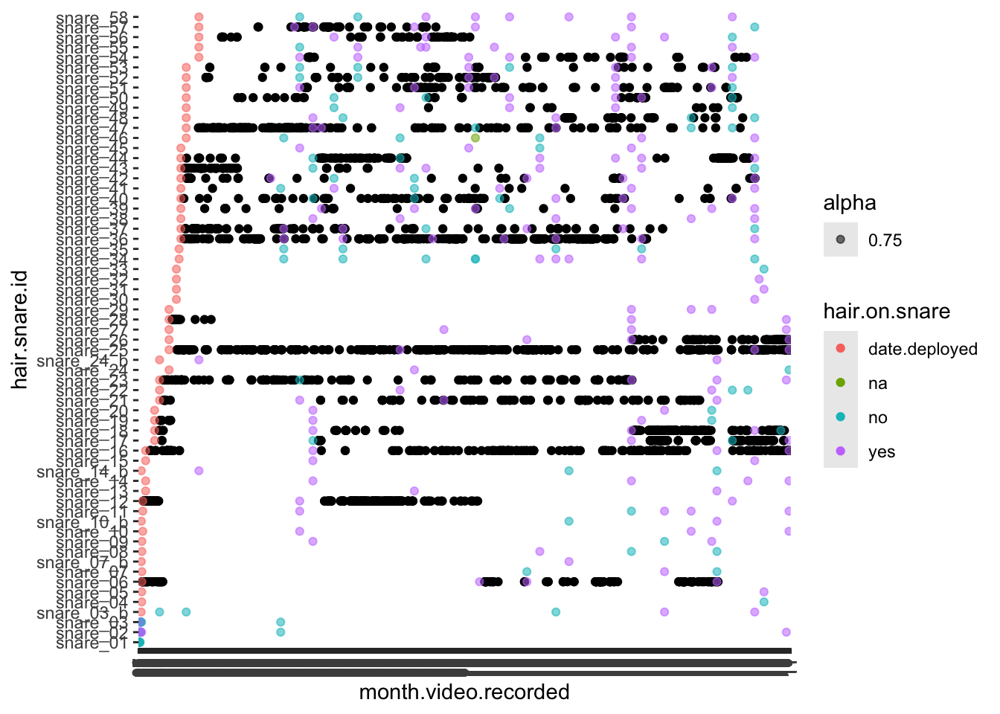
Models
Getting data ready for model
# figuring out which columns are which
column_indices <- seq_along(names(videos_hair_all))
# Print the column names along with their indices
for (i in column_indices) {
cat("Column", i, ":", names(videos_hair_all)[i], "\n")
}Column 1 : hair.snare.id
Column 2 : personel
Column 3 : date.sd.card.collected
Column 4 : date.video.recorded
Column 5 : time.video.starts
Column 6 : AM.PM
Column 7 : time.24.hour
Column 8 : degrees.C
Column 9 : main.species
Column 10 : secondary.species
Column 11 : max.number.of.individuals
Column 12 : min.number.of.individuals
Column 13 : max.number.of.adults
Column 14 : max.number.of.neonates
Column 15 : max.number.of.females
Column 16 : max.number.of.males
Column 17 : max.number.of.unk.sex
Column 18 : snag.snare
Column 19 : number.of.times.snag.snare
Column 20 : over.under.side.of.snare
Column 21 : snout.sampled
Column 22 : head.sampled
Column 23 : neck.sampled
Column 24 : back.sampled
Column 25 : side.sampled
Column 26 : belly.sampled
Column 27 : legs.sampled
Column 28 : rump.sampled
Column 29 : tail.sampled
Column 30 : main.behavior
Column 31 : secondary.behavior
Column 32 : wolf.ID
Column 33 : notes
Column 34 : beaver.travel.inhibited.by.snare
Column 35 : need.double.check
Column 36 : coolness
Column 37 : date.time.video.recorded
Column 38 : similar.species
Column 39 : snare_number
Column 40 : date.sd.card.collected.time
Column 41 : date.hair.collected
Column 42 : sample.id
Column 43 : dirt.score
Column 44 : entire.sample.weight.mg
Column 45 : number.of.guard.hairs
Column 46 : follicle.present
Column 47 : year
Column 48 : days.between.checks
Column 49 : animal.videos.recorded.on.camera
Column 50 : sample.collected
Column 51 : sample.recorded.on.video
Column 52 : start.time.period.sample.and.videos
Column 53 : videos_within_range
Column 54 : northing
Column 55 : easting
Column 56 : date.deployed
Column 57 : date.collected
Column 58 : number.of.days.deployed
Column 59 : date.trail.camera.deployed
Column 60 : date.trail.camera.collected
Column 61 : number.of.days.camera.deployed
Column 62 : days.camera.per.days.snare.deployed
Column 63 : beaver.feature
Column 64 : brushes
Column 65 : n_videos
Column 66 : n.videos.beavers
Column 67 : total.snags
Column 68 : snags.per.camera.days
Column 69 : n.beaver.snag
Column 70 : n.muskrat.snag
Column 71 : percent.muskrat.snag
Column 72 : otter_snag # re-naming some columns so they make more sense
videos_hair_all <- videos_hair_all %>% rename(date.snare.deployed = date.deployed)
videos_hair_all <- videos_hair_all %>% rename(date.snare.collected = date.collected)
videos_hair_all <- videos_hair_all %>% rename(number.of.days.snare.deployed = number.of.days.deployed)
# converting all numeric columns to numeric
videos_hair_all <- videos_hair_all %>%
mutate_at(vars(max.number.of.individuals, min.number.of.individuals, min.number.of.individuals , max.number.of.adults ,
max.number.of.neonates , max.number.of.females , max.number.of.males ,
max.number.of.unk.sex , snag.snare , number.of.times.snag.snare , snout.sampled ,
head.sampled , neck.sampled , back.sampled , side.sampled , belly.sampled ,
legs.sampled , rump.sampled , tail.sampled , beaver.travel.inhibited.by.snare ,
dirt.score , entire.sample.weight.mg , number.of.guard.hairs , follicle.present ,
days.between.checks , animal.videos.recorded.on.camera , sample.collected ,
sample.recorded.on.video , number.of.days.snare.deployed , brushes ,
number.of.days.camera.deployed , days.camera.per.days.snare.deployed ,
n_videos , n.videos.beavers ,
total.snags , snags.per.camera.days , n.beaver.snag ,
n.muskrat.snag , percent.muskrat.snag , otter_snag), as.numeric)
# filtering videos for beaver and grouping them by variables of interest, then summarizing the sum of number of individuals were captured, number of time adults and babies were captured, number of times individuals crossed the snare, and number of times each body part was snagged
# for all snares that had videos taken at them and the time periods that those videos were taken, this tells us if hair samples were collected
hair.for.model <- videos_hair_all %>%
mutate(is_beaver = case_when(main.species == "beaver" ~ "beaver", TRUE ~ "other")) %>%
group_by(is_beaver, hair.snare.id, sample.id, entire.sample.weight.mg,
sample.collected, dirt.score, date.hair.collected, days.between.checks, brushes,
beaver.feature) %>%
summarize(
n.max.ind = sum(max.number.of.individuals, na.rm = TRUE),
n.max.adults = sum(max.number.of.adults, na.rm = TRUE),
n.max.bb = sum(max.number.of.neonates, na.rm = TRUE),
n.crossed.snare = sum(number.of.times.snag.snare, na.rm = TRUE),
n.snout = sum(snout.sampled, na.rm = TRUE),
n.head = sum(head.sampled, na.rm = TRUE),
n.neck = sum(neck.sampled, na.rm = TRUE),
n.back = sum(back.sampled, na.rm = TRUE),
n.side = sum(side.sampled, na.rm = TRUE),
n.belly = sum(belly.sampled, na.rm = TRUE),
n.legs = sum(legs.sampled, na.rm = TRUE),
n.rump = sum(rump.sampled, na.rm = TRUE),
n.tail = sum(tail.sampled, na.rm = TRUE)
) %>%
ungroup() %>%
pivot_wider(
names_from = is_beaver,
values_from = c(n.max.ind, n.max.adults, n.max.bb, n.crossed.snare,
n.snout, n.head, n.neck, n.back, n.side, n.belly,
n.legs, n.rump, n.tail),
names_glue = "{.value}_{is_beaver}"
)
# Camera got ruined by blackbear (snare_08)
hair.for.model <- hair.for.model %>% filter(hair.snare.id != "snare_08")
# finding weight of sample / number of days sample could have been collected in
hair.for.model <- hair.for.model %>% mutate(weight.by.day = entire.sample.weight.mg/days.between.checks)
# removing sample hair_373 because it's missing
hair.for.model <- hair.for.model %>% filter(sample.id != "hair_373")
# replacing NAs with 0's
hair.for.model$n.crossed.snare_beaver <-
ifelse(is.na(hair.for.model$n.crossed.snare_beaver), 0,
hair.for.model$n.crossed.snare_beaver)
hair.for.model$n.crossed.snare_other <-
ifelse(is.na(hair.for.model$n.crossed.snare_other), 0,
hair.for.model$n.crossed.snare_other)
hair.for.model$n.snout_beaver[is.na(hair.for.model$n.snout_beaver)] <- 0
hair.for.model$n.head_beaver[is.na(hair.for.model$n.head_beaver)] <- 0
hair.for.model$n.neck_beaver[is.na(hair.for.model$n.neck_beaver)] <- 0
hair.for.model$n.back_beaver[is.na(hair.for.model$n.back_beaver)] <- 0
hair.for.model$n.side_beaver[is.na(hair.for.model$n.side_beaver)] <- 0
hair.for.model$n.belly_beaver[is.na(hair.for.model$n.belly_beaver)] <- 0
hair.for.model$n.legs_beaver[is.na(hair.for.model$n.legs_beaver)] <- 0
hair.for.model$n.rump_beaver[is.na(hair.for.model$n.rump_beaver)] <- 0
hair.for.model$n.tail_beaver[is.na(hair.for.model$n.tail_beaver)] <- 0Model 1: What influences the likelihood of a sample being collected
(For all sampling periods where videos were recorded at snares)
hair sample collected ~
brushes present +
beaver feature +
number of times beavers snagged snare +
number of times non-beaver animals snagged snare
Standardizing variables
# standardizing variables
hair.for.model$days.between.checks.std.mod.1 <- (hair.for.model$days.between.checks - mean(hair.for.model$days.between.checks)) / sd(hair.for.model$days.between.checks)
hair.for.model$n.crossed.snare_beaver.std.mod.1 <- (hair.for.model$n.crossed.snare_beaver - mean(hair.for.model$n.crossed.snare_beaver)) / sd(hair.for.model$n.crossed.snare_beaver)
hair.for.model$n.crossed.snare_other.std.mod.1 <- (hair.for.model$n.crossed.snare_other - mean(hair.for.model$n.crossed.snare_other)) / sd(hair.for.model$n.crossed.snare_other)Visualizing data
library(plotly)
# brushes
ggplotly(ggplot(hair.for.model, aes(x=brushes, y=sample.collected)) + theme_bw()+
geom_point(position = position_jitter(w = 2, h = 0.05), size=3) +
stat_smooth(method="glm", method.args = list(family = "binomial"),
se=FALSE))# beavers crossed snare
ggplotly(ggplot(hair.for.model, aes(x=n.crossed.snare_beaver.std.mod.1, y=sample.collected)) +
theme_bw()+
geom_point(position = position_jitter(w = 2, h = 0.05), size=3) +
stat_smooth(method="glm", method.args = list(family = "binomial"),
se=FALSE))# other animals crossed snare
ggplotly(ggplot(hair.for.model, aes(x=n.crossed.snare_other.std.mod.1, y=sample.collected)) +
theme_bw()+
geom_point(position = position_jitter(w = 2, h = 0.05), size=3) +
stat_smooth(method="glm", method.args = list(family = "binomial"),
se=FALSE))Running model
# converting all variables to factor that are factors
hair.for.model$sample.collected <- as.factor(hair.for.model$sample.collected)
hair.for.model$brushes <- as.factor(hair.for.model$brushes)
hair.for.model$beaver.feature <- as.factor(hair.for.model$beaver.feature)
# running model
model1 <- glm(sample.collected ~
brushes +
beaver.feature +
#days.between.checks.std.mod.1 +
n.crossed.snare_beaver.std.mod.1 +
n.crossed.snare_other.std.mod.1
, data = hair.for.model, family = binomial())
# model summary
summary(model1)
Call:
glm(formula = sample.collected ~ brushes + beaver.feature + n.crossed.snare_beaver.std.mod.1 +
n.crossed.snare_other.std.mod.1, family = binomial(), data = hair.for.model)
Coefficients:
Estimate Std. Error z value Pr(>|z|)
(Intercept) -16.6245 2797.4420 -0.006 0.9953
brushes1 15.9889 1915.0642 0.008 0.9933
beaver.featuredam 18.5399 4053.5821 0.005 0.9964
beaver.featuredam.crossing 1.9636 3390.1552 0.001 0.9995
beaver.featurefeeding.trail 18.0113 2797.4420 0.006 0.9949
n.crossed.snare_beaver.std.mod.1 1.8148 0.9397 1.931 0.0535 .
n.crossed.snare_other.std.mod.1 0.2419 0.6870 0.352 0.7247
---
Signif. codes: 0 '***' 0.001 '**' 0.01 '*' 0.05 '.' 0.1 ' ' 1
(Dispersion parameter for binomial family taken to be 1)
Null deviance: 130.16 on 108 degrees of freedom
Residual deviance: 109.26 on 102 degrees of freedom
AIC: 123.26
Number of Fisher Scoring iterations: 16# checking model assumptions
library(ggResidpanel)
resid_panel(model1)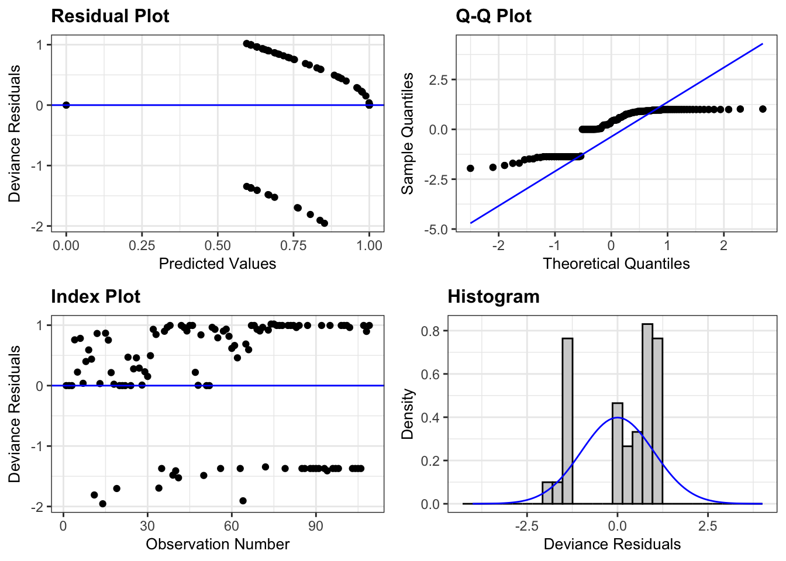
library(car)
vif(model1) GVIF Df GVIF^(1/(2*Df))
brushes 8.835647e+06 1 2972.481550
beaver.feature 8.835646e+06 3 14.378262
n.crossed.snare_beaver.std.mod.1 1.143287e+00 1 1.069246
n.crossed.snare_other.std.mod.1 1.065413e+00 1 1.032189Model 2: What influences the weight of samples collected?
(For all sampling periods where a hair sample was collected with a dirt score of 0 and videos were recorded at snares)
hair weight / sample days ~
brushes present +
beaver feature +
number of times beavers snagged snares +
number of times non-beaver animals snagged snares
Standardizing variables
# filtering for just samples with a dirt score of 0
hair.for.model.dirt.0 <- hair.for.model %>% filter(dirt.score == 0)
# standardizing variables
hair.for.model.dirt.0$n.crossed.snare_beaver.std.mod.2 <-
(hair.for.model.dirt.0$n.crossed.snare_beaver - mean(hair.for.model.dirt.0$n.crossed.snare_beaver)) / sd(hair.for.model.dirt.0$n.crossed.snare_beaver)
hair.for.model.dirt.0$n.crossed.snare_other.std.mod.2 <- (hair.for.model.dirt.0$n.crossed.snare_other - mean(hair.for.model.dirt.0$n.crossed.snare_other)) / sd(hair.for.model.dirt.0$n.crossed.snare_other)Visualizing data
# brushes
ggplot(hair.for.model.dirt.0, aes(x=brushes, y=weight.by.day)) + geom_point() + geom_smooth()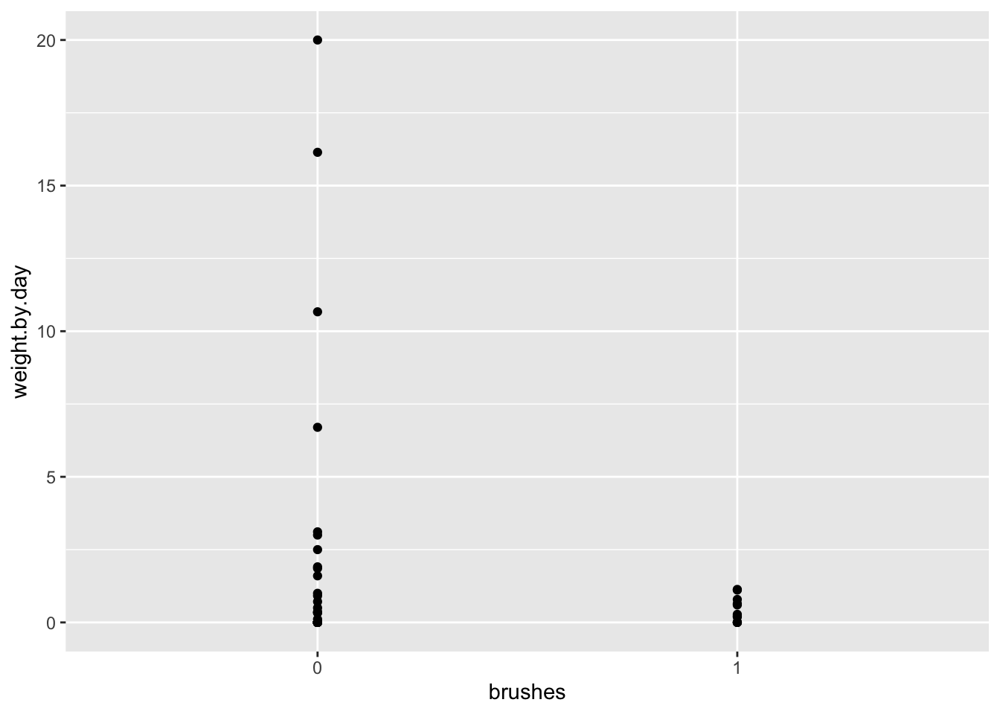
# beaver feature
ggplot(hair.for.model.dirt.0, aes(x=beaver.feature, y=weight.by.day)) + geom_point() + geom_smooth()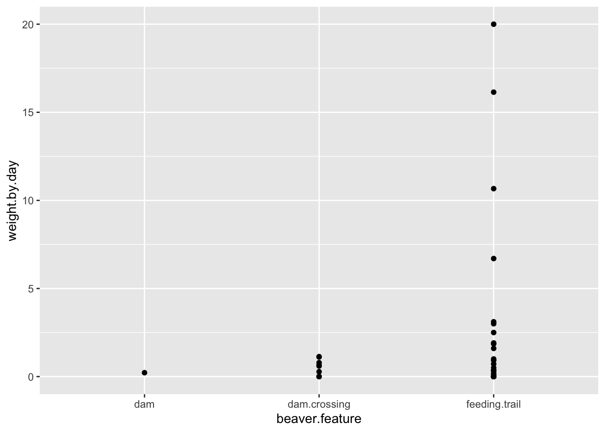
# number of times beavers crossed snare
ggplot(hair.for.model.dirt.0, aes(x=n.crossed.snare_beaver.std.mod.2, y=weight.by.day)) + geom_point() + geom_smooth()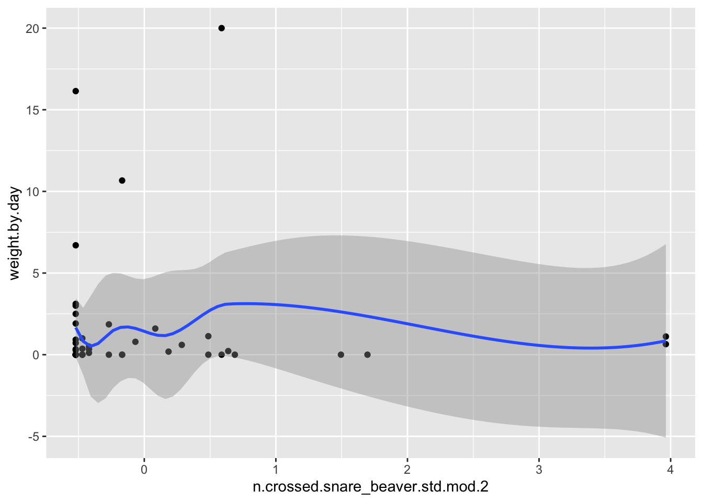
# number of times other animals crossed snare
ggplot(hair.for.model.dirt.0, aes(x=n.crossed.snare_other.std.mod.2, y=weight.by.day)) + geom_point() + geom_smooth()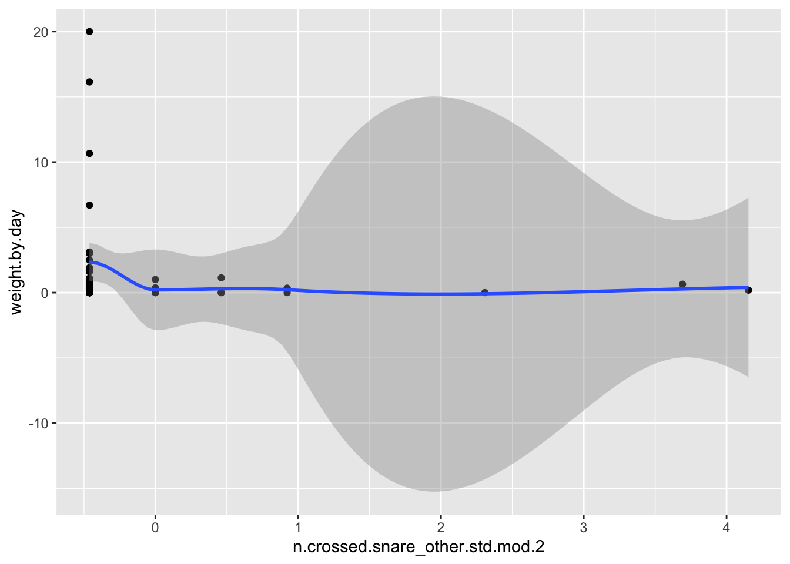
Running model
# running model
model2 <- lm(weight.by.day ~
brushes +
beaver.feature +
n.crossed.snare_beaver.std.mod.2 +
n.crossed.snare_other.std.mod.2,
data = hair.for.model.dirt.0)
# summarizing model
summary(model2)
Call:
lm(formula = weight.by.day ~ brushes + beaver.feature + n.crossed.snare_beaver.std.mod.2 +
n.crossed.snare_other.std.mod.2, data = hair.for.model.dirt.0)
Residuals:
Min 1Q Median 3Q Max
-3.210 -2.066 -1.149 0.121 17.305
Coefficients:
Estimate Std. Error t value Pr(>|t|)
(Intercept) 0.07432 5.59871 0.013 0.989
brushes1 -0.54379 3.52265 -0.154 0.878
beaver.featuredam.crossing 0.81023 4.38432 0.185 0.854
beaver.featurefeeding.trail 1.95853 5.51246 0.355 0.724
n.crossed.snare_beaver.std.mod.2 0.56791 0.72834 0.780 0.440
n.crossed.snare_other.std.mod.2 -0.71211 0.78666 -0.905 0.371
Residual standard error: 4.113 on 41 degrees of freedom
Multiple R-squared: 0.05697, Adjusted R-squared: -0.05803
F-statistic: 0.4954 on 5 and 41 DF, p-value: 0.7778# checking model assumpations
resid_panel(model2)
vif(model2) GVIF Df GVIF^(1/(2*Df))
brushes 6.553639 1 2.560008
beaver.feature 6.137308 2 1.573963
n.crossed.snare_beaver.std.mod.2 1.442179 1 1.200908
n.crossed.snare_other.std.mod.2 1.682363 1 1.297059Model 3: Do certain areas of the beavers body leave more hair on the snare when snagged?
(For all sampling periods where a hair sample was collected with a dirt score of 0 and videos were recorded at snares)
hair weight / sample days ~
number of times back snagged +
number of times belly snagged +
number of times side snagged +
number of times snout snagged +
number of times tail snagged
Standardizing variables
# combining back measurements
hair.for.model.dirt.0$n.back.all_beaver <-
hair.for.model.dirt.0$n.head_beaver + hair.for.model.dirt.0$n.neck_beaver +
hair.for.model.dirt.0$n.back_beaver + hair.for.model.dirt.0$n.rump_beaver
# combining belly measurements
hair.for.model.dirt.0$n.belly.all_beaver <-
hair.for.model.dirt.0$n.belly_beaver + hair.for.model.dirt.0$n.legs_beaver
# standardizing variables
# back
hair.for.model.dirt.0$n.back.all_beaver.std.mod.3 <-
(hair.for.model.dirt.0$n.back.all_beaver -
mean(hair.for.model.dirt.0$n.back.all_beaver)) /
sd(hair.for.model.dirt.0$n.back.all_beaver)
# belly
hair.for.model.dirt.0$n.belly.all_beaver.std.mod.3 <-
(hair.for.model.dirt.0$n.belly.all_beaver -
mean(hair.for.model.dirt.0$n.belly.all_beaver)) /
sd(hair.for.model.dirt.0$n.belly.all_beaver)
# snout
hair.for.model.dirt.0$n.snout_beaver.std.mod.3 <- (hair.for.model.dirt.0$n.snout_beaver - mean(hair.for.model.dirt.0$n.snout_beaver)) / sd(hair.for.model.dirt.0$n.snout_beaver)
# side
hair.for.model.dirt.0$n.side_beaver.std.mod.3 <- (hair.for.model.dirt.0$n.side_beaver - mean(hair.for.model.dirt.0$n.side_beaver)) / sd(hair.for.model.dirt.0$n.side_beaver)
# tail
hair.for.model.dirt.0$n.tail_beaver.std.mod.3 <- (hair.for.model.dirt.0$n.tail_beaver - mean(hair.for.model.dirt.0$n.tail_beaver)) / sd(hair.for.model.dirt.0$n.tail_beaver)Visualizing data
# snout
ggplot(hair.for.model.dirt.0,
aes(x=n.snout_beaver.std.mod.3, y=weight.by.day)) + geom_point() + geom_smooth()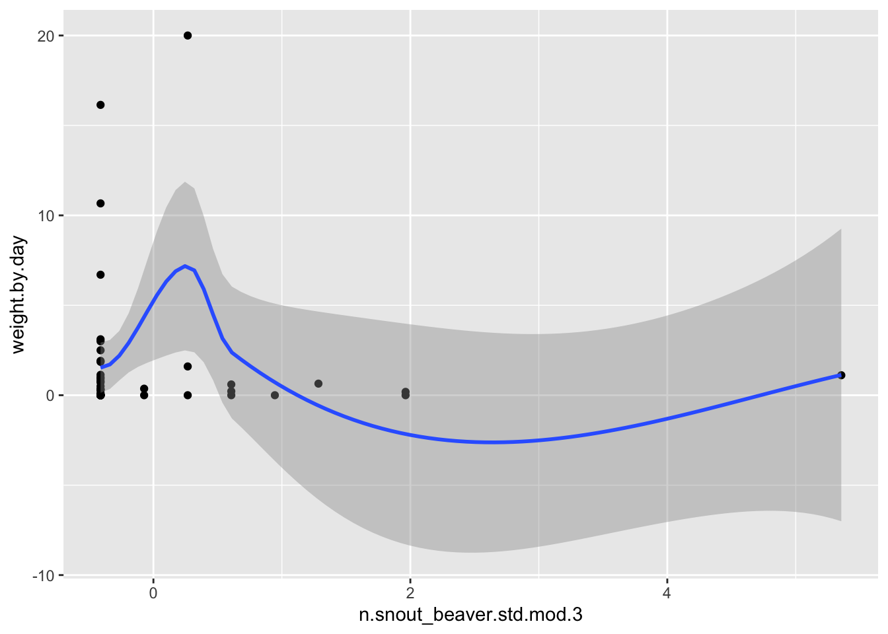
# side
ggplot(hair.for.model.dirt.0,
aes(x=n.side_beaver.std.mod.3, y=weight.by.day)) + geom_point() + geom_smooth()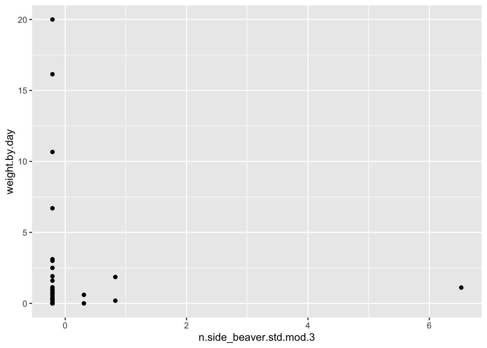
# tail
ggplot(hair.for.model.dirt.0,
aes(x=n.tail_beaver.std.mod.3, y=weight.by.day)) + geom_point() + geom_smooth()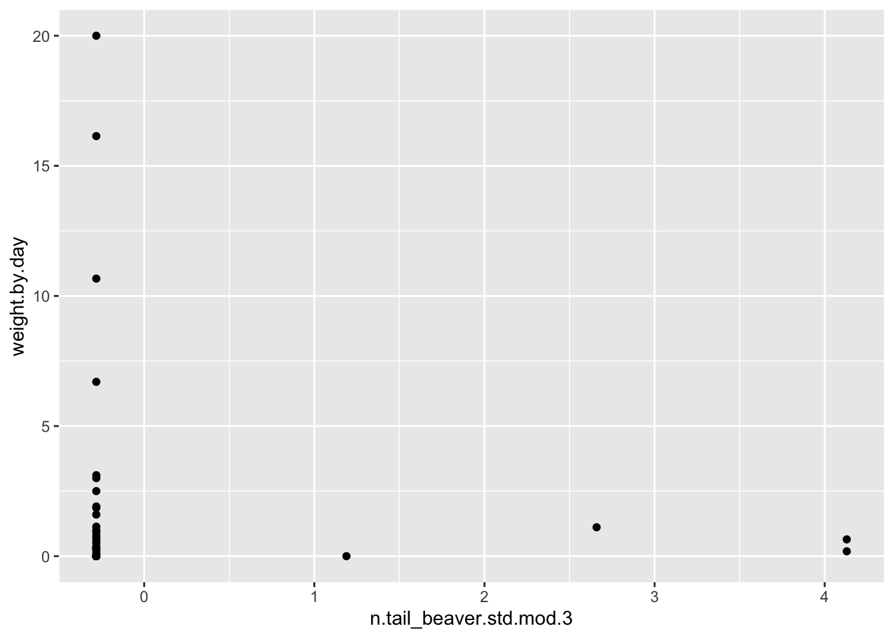
# back all
ggplot(hair.for.model.dirt.0,
aes(x=n.back.all_beaver.std.mod.3, y=weight.by.day)) + geom_point() + geom_smooth()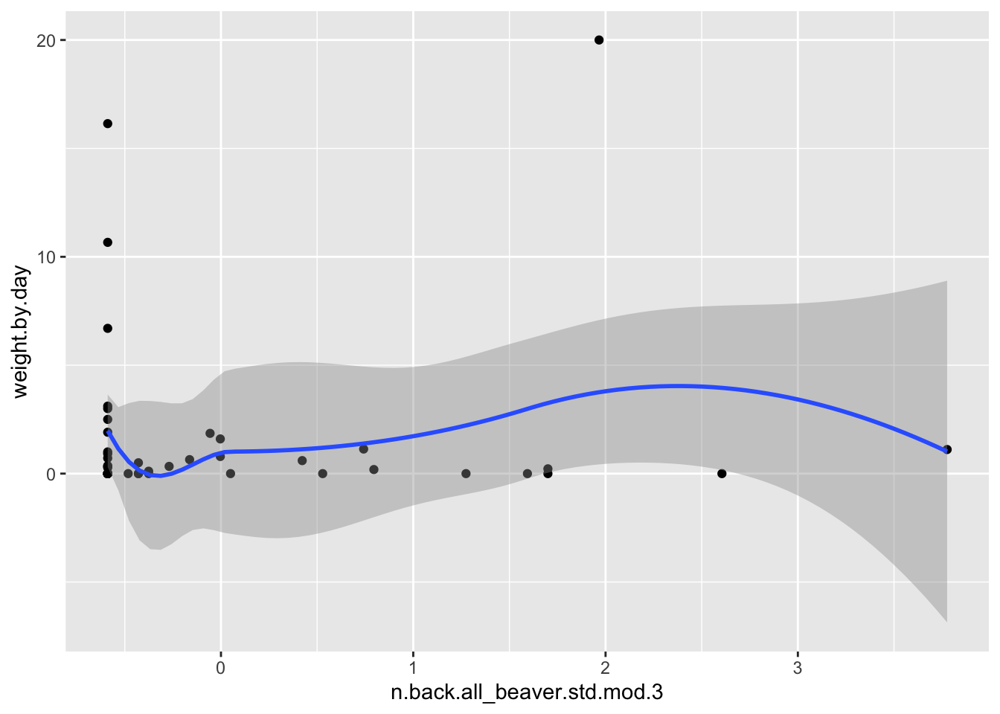
# belly all
ggplot(hair.for.model.dirt.0,
aes(x=n.belly.all_beaver.std.mod.3, y=weight.by.day)) + geom_point() + geom_smooth()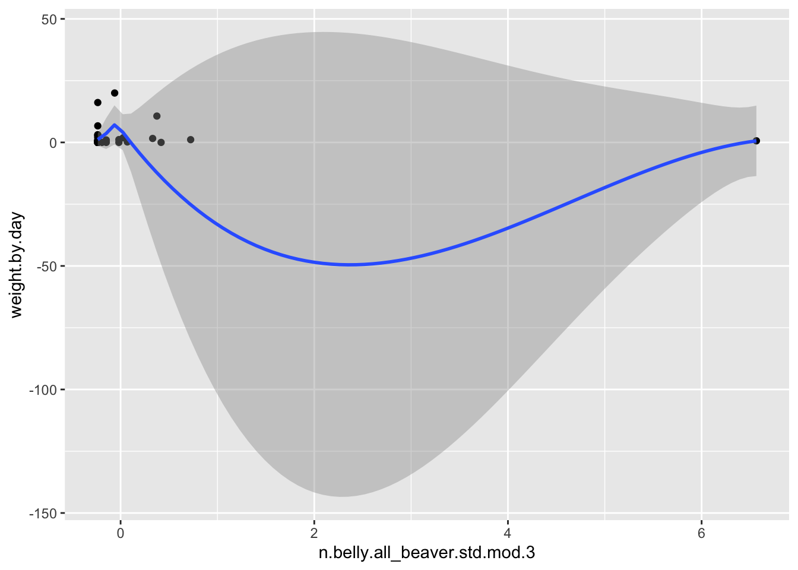
Running model
# running model
model3 <- lm(weight.by.day ~
n.back.all_beaver.std.mod.3 +
n.belly.all_beaver.std.mod.3 +
n.snout_beaver.std.mod.3 +
n.side_beaver.std.mod.3+
n.tail_beaver.std.mod.3,
data = hair.for.model.dirt.0)
# summary of model
summary(model3)
Call:
lm(formula = weight.by.day ~ n.back.all_beaver.std.mod.3 + n.belly.all_beaver.std.mod.3 +
n.snout_beaver.std.mod.3 + n.side_beaver.std.mod.3 + n.tail_beaver.std.mod.3,
data = hair.for.model.dirt.0)
Residuals:
Min 1Q Median 3Q Max
-3.4527 -1.4043 -1.2407 -0.0381 16.5978
Coefficients:
Estimate Std. Error t value Pr(>|t|)
(Intercept) 1.6324 0.6055 2.696 0.0101 *
n.back.all_beaver.std.mod.3 1.0784 0.9940 1.085 0.2843
n.belly.all_beaver.std.mod.3 0.4420 0.8920 0.495 0.6229
n.snout_beaver.std.mod.3 -1.2226 1.8344 -0.666 0.5088
n.side_beaver.std.mod.3 0.3599 1.2221 0.294 0.7699
n.tail_beaver.std.mod.3 -0.2772 1.1603 -0.239 0.8124
---
Signif. codes: 0 '***' 0.001 '**' 0.01 '*' 0.05 '.' 0.1 ' ' 1
Residual standard error: 4.151 on 41 degrees of freedom
Multiple R-squared: 0.03954, Adjusted R-squared: -0.07759
F-statistic: 0.3376 on 5 and 41 DF, p-value: 0.8872# checking model assumptions
resid_panel(model3)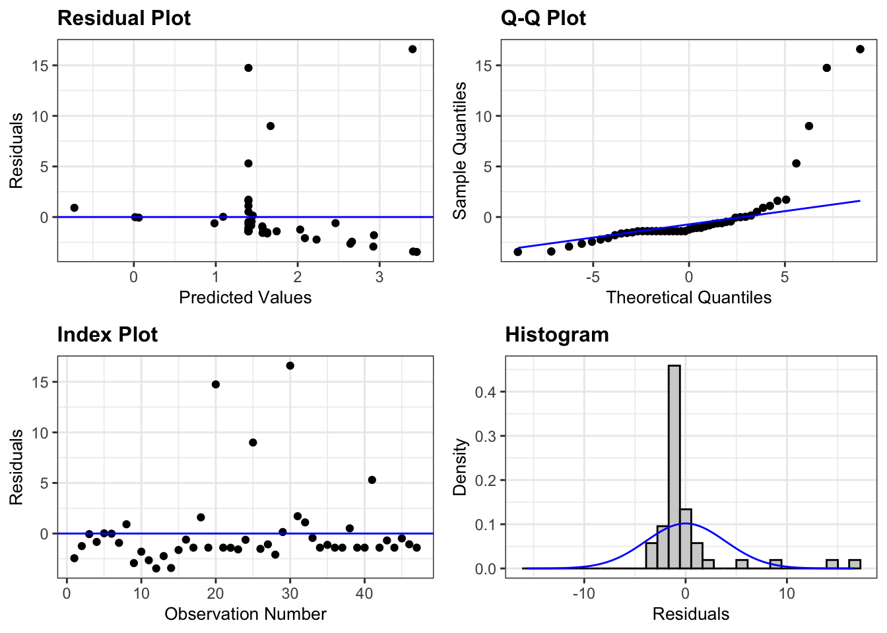
vif(model3) n.back.all_beaver.std.mod.3 n.belly.all_beaver.std.mod.3
2.637380 2.123855
n.snout_beaver.std.mod.3 n.side_beaver.std.mod.3
8.982115 3.986602
n.tail_beaver.std.mod.3
3.593962